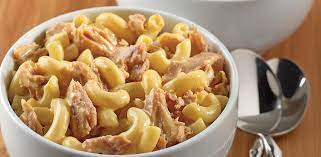

Tuna Mac

So thisis one of my favorites. It is easy, quick and great for kids.
First you'll need:
- 1 box of your favorite Mac & Cheese
- A little milk
- Spoonfull of mayonase
- A bit of butter
- 1 can of albacore tuna
- some shreaded chease (preferably mexican blend)
So to start
,
- cook your box of Mac to your liking (I like mine a little
aldente)
- Then you are going to want to strain the water
- add in a heaping tablespoon of mayo, a chunk of butter and a nice splash of milk
- Mix it all up and you are ready for your can of tuna.
- make sure you drain the water out of your can first
you may also want to add pepper or some other seasoning
if you preffer. But I think that about does it for the easy Tuna Mac